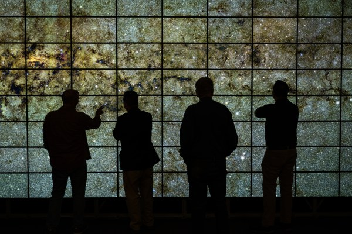
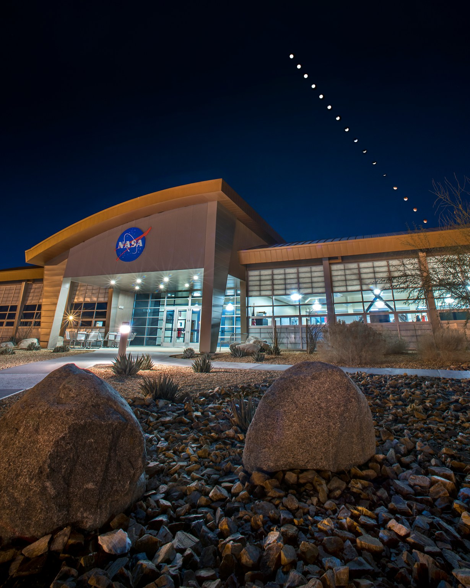
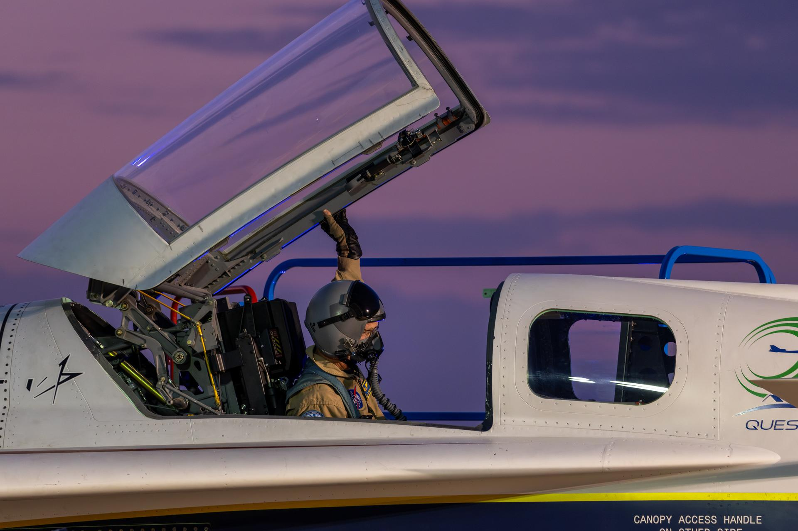
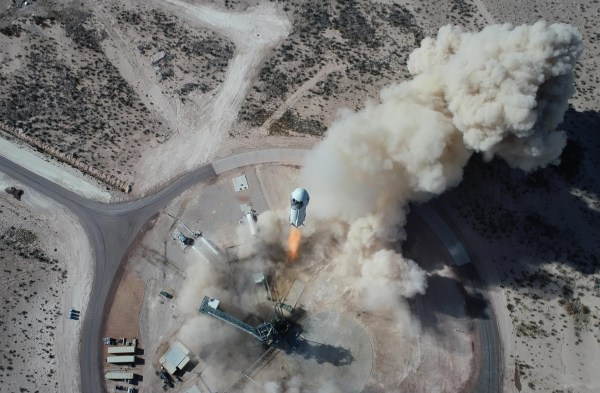

INSIDE NASA
NASA Head Quarters
NASA Headquarters, in Washington, provides overall guidance and direction to the agency, under the leadership of the Administrator. Ten field centers and a variety of installations around the country conduct the day-to-day work in laboratories, on air fields, in wind tunnels, and in control rooms. Together, this skilled, diverse group of scientists, engineers, managers, and support personnel share the Vision, Mission, and Values that are NASA
Location: Washington, D.C., USA
Address: 300 E Street SW, Washington, DC 20546, USA
Established: 1958
Focus: Leadership, mission planning
Known for: Managing all NASA programs
Map: click here


Ames Research Center
NASA’s Ames Research Center, one of ten NASA field centers, is located in the heart of California’s Silicon Valley. Since 1939, Ames has led NASA in conducting world-class research and development in aeronautics, exploration technology and science aligned with the center’s core capabilities.
Location: California, USA
Address: Moffett Field, Mountain View, CA 94035, USA
Established: 1939
Focus: AI, space science
Known for: Supercomputers
Map: click here


-
Armstrong Flight Research Center
NASA’s primary center for high-risk, atmospheric flight research and test projects, with access to 301,000 acres of remote land, year-round flying weather, and the Bell X-1 Supersonic Corridor.
Location: California, USA
Address: Edwards, CA 93523, USA
Established: 1946
Focus: Flight testing
Known for: X-planes
Map: click here


Scientists ->
Wernher von Braun
Built the powerful rockets that made Moon missions
Katherine Johnson
Calculated spaceflight paths that ensured astronaut safety.
Sally Ride
First American woman to travel into space.
Nancy Grace Roman
Helped create the Hubble Space Telescope.
️ John Mather
Helped prove the Big Bang theory.
Telescopes ->
Optical Telescopes:
Observe visible light to study stars and galaxies.
Radio Telescopes:
Detect radio waves from space objects.
Infrared Telescopes:
Observe heat to study dust, planets, and early galaxies.
Gamma-Ray Telescopes:
Detect high-energy events like explosions and black holes.
Space Telescopes:
Orbit Earth to capture clearer images across all wavelengths.
Plans->
Return to the Moon
Build a long-term human presence and prepare for Mars missions.
Mars Exploration
Send humans and advanced robots to study and explore Mars.
Next-Generation Telescopes
Launch new telescopes to study dark energy, galaxies, and exoplanets.
Earth Protection
Monitor climate change, weather, and natural disasters using satellites.
Deep Space Exploration
Explore planets, moons, and asteroids across the solar system.
New Technologies
Develop advanced spacecraft, AI, and systems for future space travel.